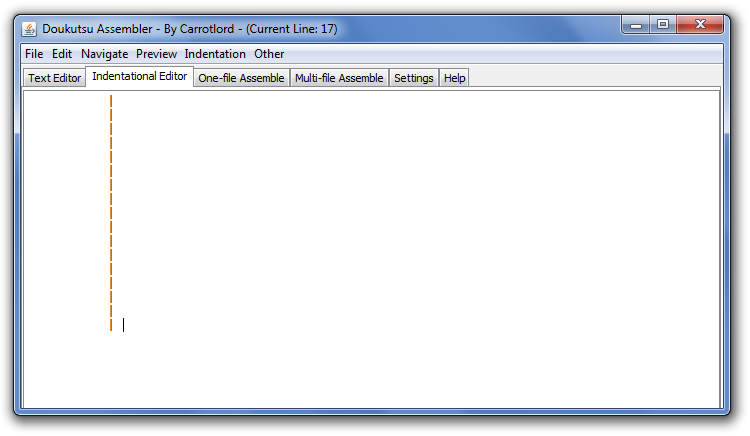
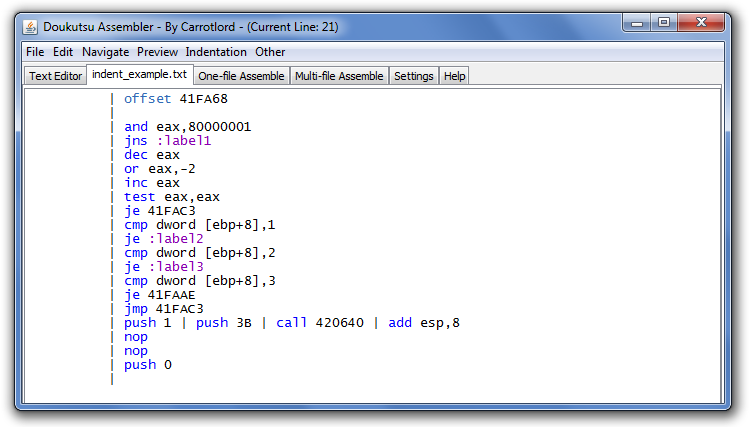
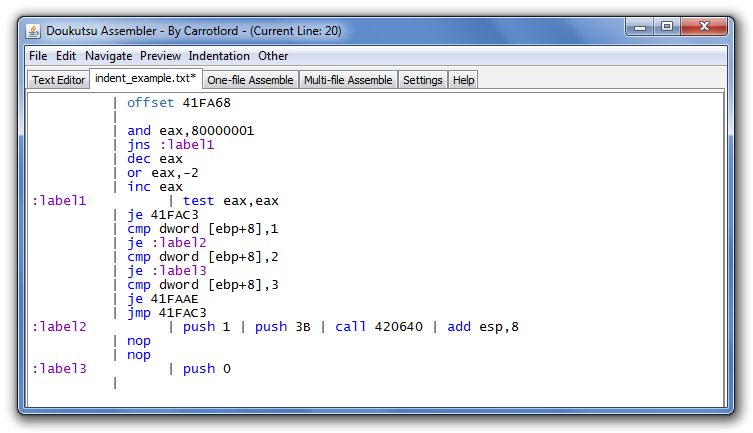
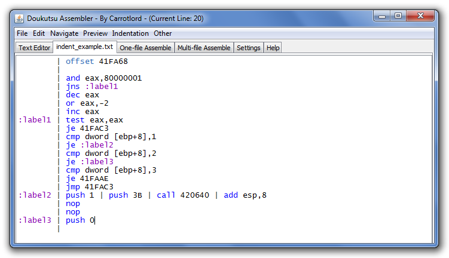
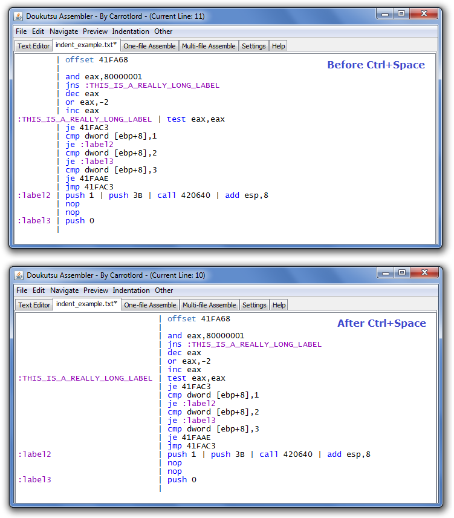
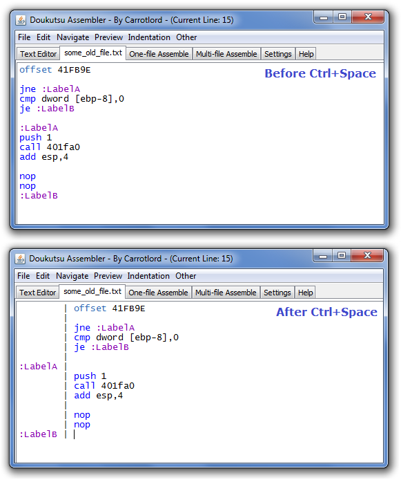

|
You're probably wondering what's so special about the second text editor. The first editor seems straightforward, but the other one has some weird behavior.
The second text editor is known as the indentational editor. The point of this specialized editor is to keep labels and instructions separated for easier readability. But how? First, open up the Doukutsu Assembler and click on the second tab. Inside the indentational editor, repeatedly press enter a few times. (Make sure you press and then release.. don't just hold the enter key down or else this won't work).  Every time you press enter, you see that tabbing automatically happens. A natural barrier is created from a series of pipe characters. So what? Is it good for ASCII art or something? Not exactly. Go to File > New File... and start over. This time, start typing in ASM code.  Here I have saved the file as indent_example.txt. Notice that none of the labels have been defined yet. Instead of putting a label right before an instruction, as we normally do with the Doukutsu Assembler, this time we shall put the label on the same line as the instruction. Take your mouse cursor and click on the left side of the "barrier". Now start typing in your labels on the appropriate lines.  Now we have a serious problem. The pipes don't line up correctly, and now everything looks ugly. We could just realign them by erasing some text, but that would be really tedious. Fortunately, there's an easy solution. Press the Ctrl+Space shortcut.  Ctrl+Space instantly reformats the text and brings back the barrier. So whenever you insert some new labels, just do a Ctrl+Space and you're good to go. Versatility of Auto-Adjust The action you just performed is called "Auto-Adjust". You can access it by going to Indentation > Auto-Adjust Indents... or just press Ctrl+Space again. Auto-adjust easily handles long label names. Here's a good example of a long label being taken care of:  Of course, if you don't want your margins to be that large, you should try to use short label names whenever possible. Doing an Auto-Adjust will expand or shrink the tabbing as needed. Now for the final example. This will prove how Auto-Adjust can successfully distinguish labels from regular ASM even when there is no indentation at all! Right now I'm going to open up some_old_file.txt and press Ctrl+Space shortly after.  When you're done, you should be able to assemble an indented ASM source file in much the same way as you would a regular ASM source file. Using Defines in the Indentational Editor It is okay to put defines to the right of the barrier. Now you can probably see why pipes are ignored in defines. | offset 450000 | | #define | // define macros go here. | #enddefine | :label0 | // code. | // code. :label1 | // code. | // code. :label2 | // more code. Back to the Table of Contents |